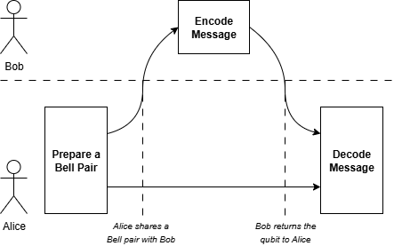

In Challenge 1: Creating a Bell Pair we saw how to use a Bell measurement to create a secure bike sharing network. However, there is a lot more we can do with a Bell measurement than simply teleporting quantum data around. One example is superdense coding, which enables us to move large amounts of data more efficiently. As before, we will think of Alice receiving a message from her friend Bob as an analogy for messages sent to the bike sharing network.
In a conventional network, Alice and Bob would communicate by sending conventional bits back and forth. It turns out that if Alice and Bob share a Bell pair, then they can send multiple bits of conventional data using a single qubit! The idea works as follows. First Alice and Bob meet to set up a Bell pair. Each person takes home one qubit of the pair. Later on, when Bob wants to send Alice a message, he will apply some gates to his qubit to encode the message. Once Alice receives the qubit, she will then apply a Bell measurement to decode the message. This is summarized by the following diagram.
In this challenge, you will explore how superdense coding works, and consider how it could be integrated into the bike sharing network. The rest of the challenge outline is as follows.
LINKS HERE
Citations: This challenge is based on the work of Charles Bennett and Stephen Wiesner in 1992. The quantum internet aspects of this challenge were inspired by the work of Stephanie Wehner, David Elkouss, and Ronald Hanson in 2018.